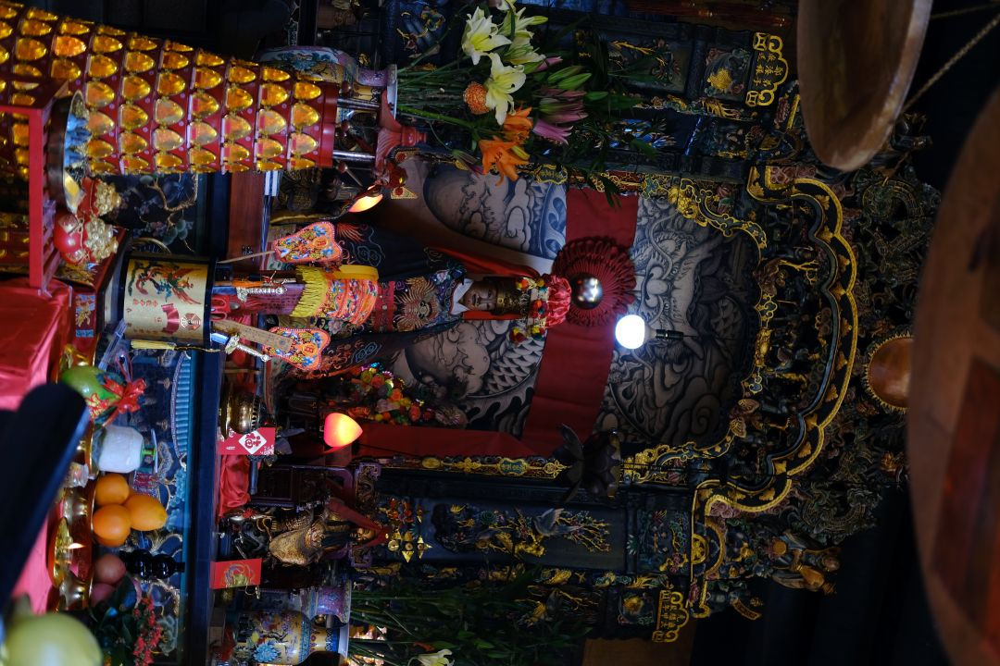
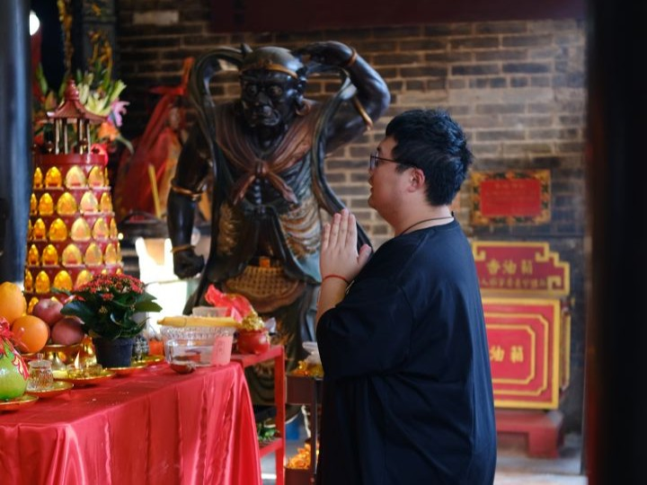
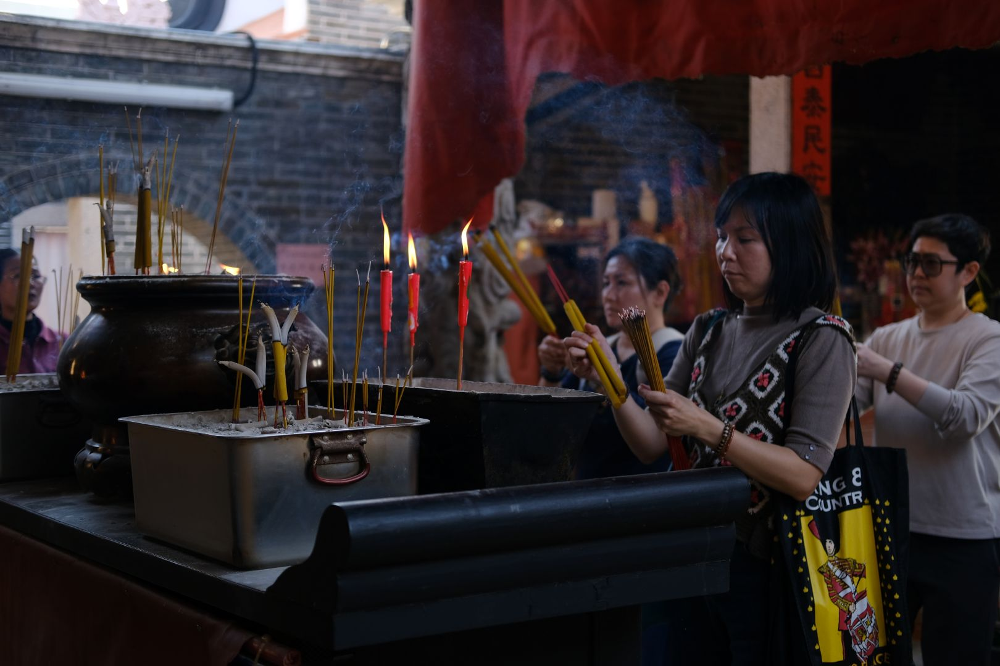
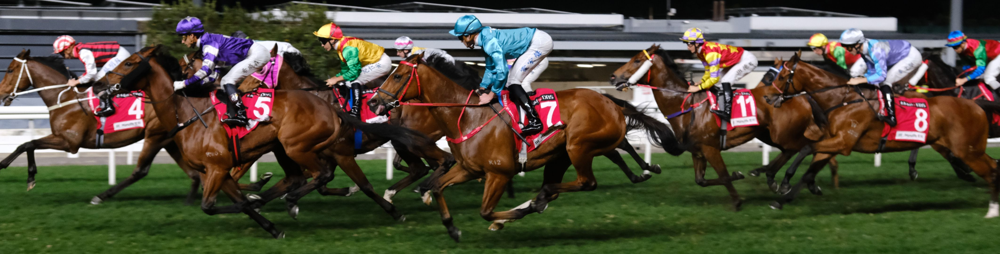
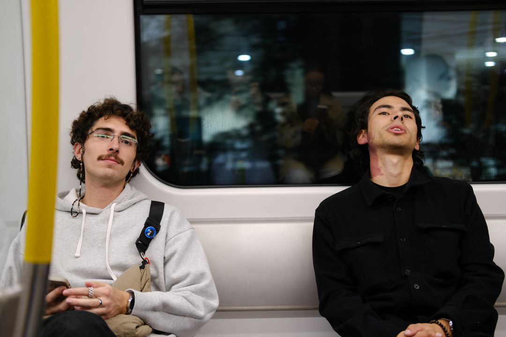

Hong Kong ist ein Schmelztiegel an verschiedenen Kulturen und Religionen,
doch es gibt einen Gott, an den hier jeder glaubt, und das ist das Geld.
Man muss auch nicht viel Zeit in der Stadt verbringen, bevor man merkt,
dass der Komerz der König von Hongkong ist. Jede U-Bahn-Station ist auch
gleichzeitig ein Einkaufszentrum. Statt Glück und Gesundheit wünscht man
sich gegenseitig Reichtum und Erfolg, und zum chinesischen Neujahr schenkt
man sich gegenseitig rote Umschläge mit Geld.

Altar
Jetzt, wo das neue Jahr auch in China vor der Tür steht, suchen aber auch
viele Menschen die zahlreichen Tempel der Stadt auf, oder lassen sich von
einer alten Frau in einer dunklen Gasse die Hand lesen. Gegen Bezahlung
versteht sich. Auch das System in den Tempeln fühlt sich irgendwie kapitalistischer
an als in Europa. Anders als in der Kirche, kriegt man hier auch wirklich was für sein Geld.

Vater Unser
Der Eintritt ist zwar in der Regel gratis, dafür gibt es in jedem Tempel ein
kleines Geschäft, in dem man Räucherstäbchen, Figürchen und andere Glücksbringer
erwerben kann. Das Motto ist: „Viel hilft viel“. Wenn sich mein Gott über ein
Räucherstäbchen freut, freut er sich über zwanzig umso mehr.

Räucherstäbchen
Die Stimmung in den
Tempeln kann man auf jeden Fall nicht mit unseren Kirchen vergleichen. Alle Götter
haben hier eine Statue in unterschiedlichsten Farben, Formen und Größen verdient.
Dazwischen Menschen, die mit unterschiedlichsten Ritualen ihren Wohlstand aufbessern wollen.
Passend zum kommenden Jahr des Pferdes gibt es in HongKong, neben den Göttern, noch eine weitere
Möglichkeit, sein Erspartes klug zu investieren.

Pferde die rennen
Trotz des Platzmangels gibt es mitten im Central District nämlich eine Pferderennbahn.
Jeden Mittwochabend finden hier mehrere Rennen statt. Natürlich kann man ganz unkompliziert
mit Blick auf die Rennbahn seine Wetten abgeben und seinen Gewinn gleich im Anschluss an der
Bar wieder loswerden. Der Eintritt ist allerdings kostenlos und es ist definitiv einen Besuch wert,
wenn man nicht zu viel darüber nachdenkt, ob es den Pferden gut geht.

Alejandro und Miguel